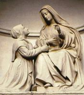
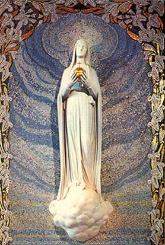
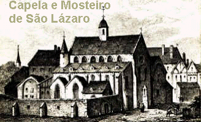
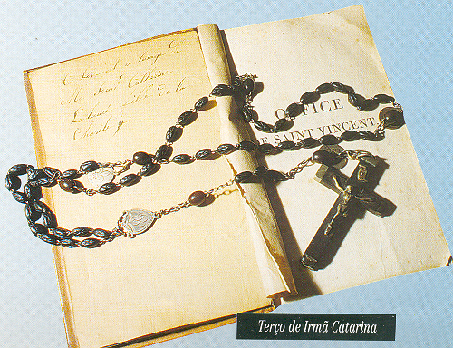
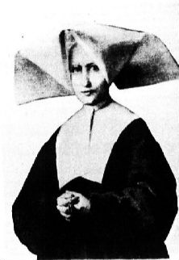

Depois de tantos acontecimentos, a esta altura o
Padre Aladel já não tinha mais dúvidas sobre as confidências de 
“Hoje é o dia da Assunção da SANTÍSSIMA VIRGEM MARIA. Ó Rainha que está sentada junto a DEUS, escutai favoravelmente as minhas orações. Por Vós e para a Vossa maior glória Vos peço que me ilumineis e me deis a força e a coragem de agir com plena autenticidade, por Vosso Amor e por amor a DEUS”.
Embora com a letra às vezes um pouco trêmula e a ortografia incorreta em algumas oportunidades, todavia o conteúdo das recordações está intacto e perfeitamente compreensível. Foi feito um primeiro esboço da imagem... Uma tristeza para Catarina. O artista não conseguia nem se aproximar dos belos traços da MÃE DE DEUS. A Irmã ficou triste e muito aborrecida quando viu o primeiro esboço da imagem. Aliás, o assunto foi um verdadeiro tormento para ela.

Irmã Estefânia Cosnard que viveu em Reuilly durante 9 anos e que sempre se encontrava com Irmã Catarina na “Rue du Bac”, deu testemunho da profunda humildade da vidente:
“Nela a humildade se traduzia pelo completo esquecimento de si e por cultivar uma grande simplicidade, que era própria da sua pessoa. Por incrível que possa parecer, ela gostava até de se humilhar diante dos outros. E por isso também, pelo seu imenso sentimento de humildade foi que conseguiu esconder durante toda a sua vida, o segredo e os favores extraordinários que recebeu de DEUS e da SANTÍSSIMA VIRGEM MARIA. Sem dúvida existiam muitas outras irmãs perfeitas, de caráter e de virtudes inquestionáveis. Mas o que sobressaia em Catarina era um dom pessoal que infundia uma nítida impressão de uma alma aniquilada pelo amor de DEUS e de NOSSA SENHORA, ela se revelava completamente desapegada de si”.
O Bairro de Reuilly com suas numerosas
fabricas de papel, onde trabalhavam muitos jovens, ressentiu-se da dureza 
As Irmãs se encontravam principalmente na hora da Oração. Irmã Filomena Millon, durante 17 anos, rezou ao lado ou perto da Irmã Catarina. Ela não consegue esquecer as suas atitudes:
“Sua fé era muito viva: era percebida, sobretudo, quando estávamos na Capela. Tinha uma atitude exemplar. Toda Irmã nova que chegava a Casa de Enghien, logo ficava impressionada com o procedimento dela. Principalmente durante a oração, ela se conservava imóvel, os olhos fixos na imagem da SANTÍSSIMA VIRGEM MARIA. Penso nisso todos os dias, quando vejo o lugar onde ela ficava. Naquele tempo não desconfiava absolutamente do favor extraordinário com o qual fora honrada por NOSSA SENHORA. Todavia, não se podia deixar de notá-la no meio das outras irmãs”.

“Às vezes, eu ia rezar o Terço com a Irmã Catarina no cubículo onde ficava e onde havia uma imagem da VIRGEM MARIA. Gostava de rezar na companhia dela para observar os seus modos e atitudes. Isso muito me edificava”.
Durante os anos 50, três acontecimentos vão alegrar o coração da Irmã Catarina:
1 – A 21 de Novembro de 1851 foi fundada em Reuilly a Associação das Filhas de Maria, pedida por NOSSA SENHORA na noite de 18 de Julho de 1830. Sua sobrinha, filha de Tonine, foi recebida nesta Associação em 1857.
2 – A difusão da Medalha Milagrosa alcançou a marca impressionante de mais de 100 milhões de Medalhas em todo o mundo, contendo a jaculatória: “Ó MARIA concebida sem pecado, rogai por nós que recorremos a vós”. O Papa Pio IX, depois de ampla consulta e apuradas pesquisas, definiu em 8 de Dezembro de 1854, o Dogma da Imaculada Conceição.
3 – Quatro anos mais tarde, em 1858, uma jovem camponesa em Lourdes, Bernadette Soubirous, recebeu a visita de uma “bela senhora”. Perguntou-lhe o nome e depois de muita insistência a “bela senhora” respondeu: “Eu sou a Imaculada Conceição”.
As notáveis Aparições de NOSSA SENHORA a Bernadette Soubirous na Gruta de Massabieille, em Lourdes, também na França, aconteceram de 11 de Fevereiro a 16 de Julho de 1858 e tiveram o objetivo específico de provar que pela suprema Vontade do CRIADOR, em vista dos méritos futuros de seu Divino FILHO, JESUS CRISTO, a VIRGEM MARIA foi concebida livre do pecado no seio de sua mãe Sant'Ana, nascendo sem a influência nefasta do Pecado Original e dos Pecados Subsequentes, sendo ao longo de sua vida protegida pelo ESPÍRITO SANTO, não cometendo o mais leve e menor pecado. Assim, NOSSA SENHORA nasceu pura e Imaculada, sem qualquer mancha. Por essa razão a VIRGEM também tem o titulo de a IMACULADA CONCEIÇÃO. Conforme já foi mencionado, esta é uma Verdade que o Papa Pio IX decretou solenemente como "Dogma de Fé".

Catarina ouvindo as notícias sobre a Aparição de Lourdes se manifestou: “É a mesma! É a VIRGEM MARIA!”
Da mesma forma como ela sentiu ao saber dos acontecimentos com Bernadette na Gruta de Massabieille, nós também percebemos que o olhar sincero e puro daquelas duas mulheres trazem a marca indelével do que viram. O Padre Hamard, Sacerdote da Missão, escreveu alguns meses antes da morte de Bernadette:
“Ela é pequenina, pálida e fraca. Somente seus olhos brilham com esplendor! Jamais vi um olhar igual, senão no Asilo de Enghein, em 1876”.